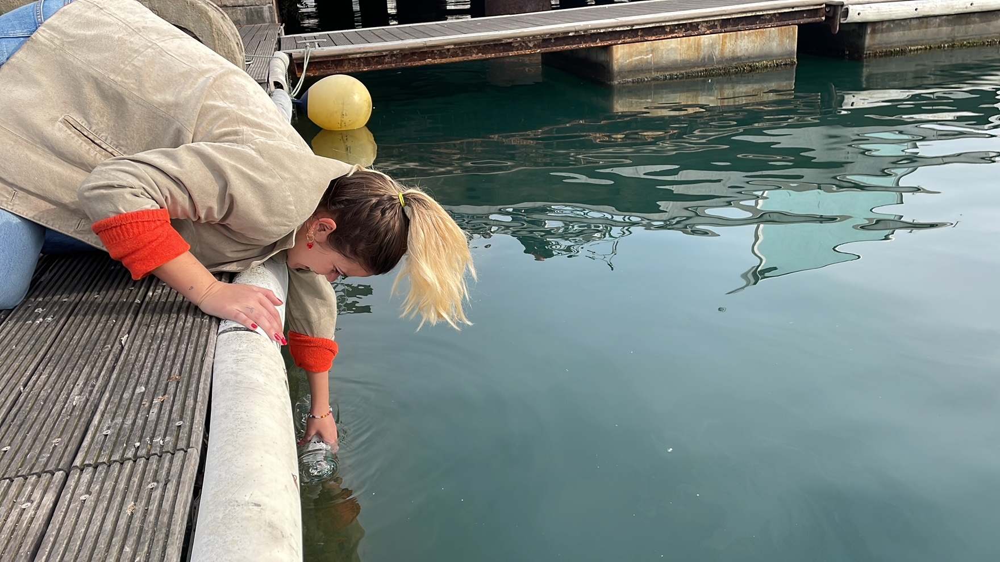

Studio
1 & 11 March 2022
Oscar Tomico, Bzeos
Part of the emphasis for term 2 is creating connections and collaborations with our community. While researching, I found a company here in Barcelona called B’zeos. I had found this company in term one and noted it down on the Miro board, so it was nice to go back and make use of that research and finally reach out to them. Pippa and I sent them an email, and they readily responded back to our request for a chat where we could discuss their products. B’zeos is a startup that focuses on using algae in packaging products. Before the informational call, Pippa and I laid out some questions for discussion we wanted to ask which can be seen below.
It was good to hear from Camila and her work partner directly and explain a bit about their goals, how they got started, and their backgrounds. At the end of the call, they mentioned that they would be open to further collaborations which made us very excited. Although the video call was helpful, we thought it would be even more impactful to see their space in person. During the call they proposed that we could go visit their lab to get a full first-person perspective. About two weeks later, we got to visit the B’zeos lab in the Barcelona science park. I have seen that there are a lot of exciting things happening at the science park, so was keen to see what it was all about. It is connected with the University of Barcelona, but not fully a part of it. Before class, Paula Del Rio, Pippa, and I went to go visit the lab. It was in a small space in the building. Inside, we got to see what machines they had, chemicals, and the lab setup, which helped us better understand their workflow and process. Looking at their prototypes, it was cool to imagine how these could be used as plastic replacements in the real world. Also, seeing the different material samples they had reignited my interest in the biomaterials again. With making so many samples in and outside of class, I had gotten a bit tired of it as I wan’t seeing any real-world application. Even though the lab had some more technical equipment than I have available on a day-to-day basis, I didn’t feel as though what B’zeos was doing was extremely different from the skills and knowledge I was acquiring with biomaterials. It showed me it was doable at a small scale like the women were doing, yet could have a big impact. Perhaps the most impactful part of the visit was the discussion we had after they showed us around the lab. We spent about 30 minutes discussing topics including life after schooling and making that jump, the differences between design, science, and engineering, what it means to be women in those fields, how to secure funding/make a living when you are running your own startup, and connections that can be made. It was inspiring to see two women, who were just a bit older than us, and also not from Spain, in Barcelona driving their passions forward. Mariana always tells us to envision our lives here and what we would want them to look like. Imagining that is sometimes hard for me but going to the lab visit helped put some things in perspective for me and showed me how willing and engaging members of the community are if I am willing to reach out and try to make connections and collaborations with them.
